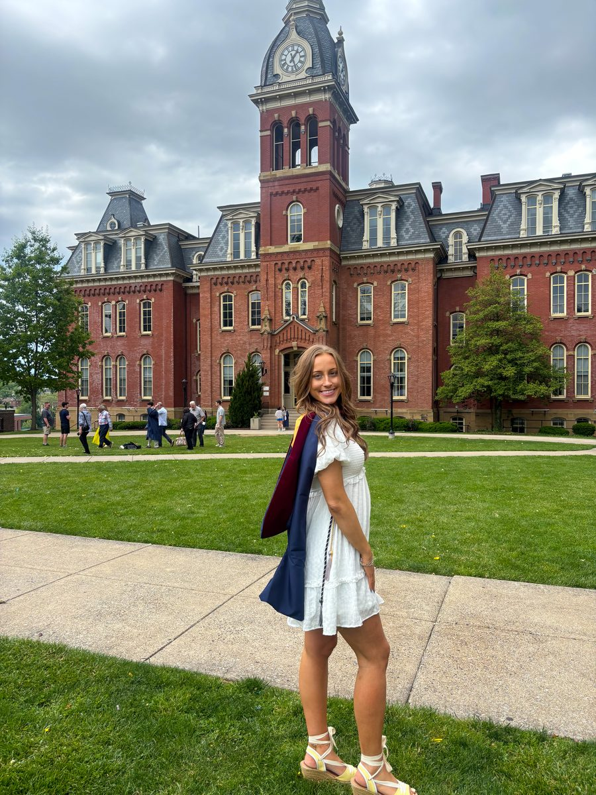

About
I hold a Master of Science in Digital Marketing Communications and a Bachelor of Science in Business Administration, majoring in Management Information Systems, both from West Virginia University. My experience spans website development, marketing and communications, and leading cross-functional project teams for partner organizations.
- Professional TechnologistWVU Division of Land-Grant Engagement · June 2026 – Present
- Master of Science in Digital Marketing CommunicationsWest Virginia University · May 2026
- Bachelor of Science in Business AdministrationManagement Information Systems · West Virginia University · May 2024